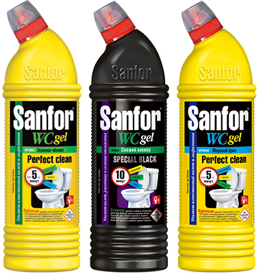
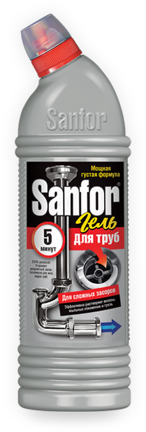

Чисто там — где Sanfor
Чистящие средства для ухода в доме.
Листайте вниз
С Sanfor вы забудете о том, что такое
Известковый налет
Ржавчина
Плесень
Неприятные запахи
Мыльные отложения
Микробы
Разводы на полу
Уход за плиткой
Жировые загрязнения
Засоры
01
Известковый налет
Регулярный уход за керамическими и хромированными поверхностями — единственно верное решение в борьбе с известковыми отложениями. Используйте Sanfor несколько раз в неделю, и налет не будет успевать образовываться.
02
Ржавчина
Регулярный уход за керамическими и хромированными поверхностями — единственно верное решение в борьбе с известковыми отложениями. Используйте Sanfor несколько раз в неделю, и налет не будет успевать образовываться.
03
Плесень
Регулярный уход за керамическими и хромированными поверхностями — единственно верное решение в борьбе с известковыми отложениями. Используйте Sanfor несколько раз в неделю, и налет не будет успевать образовываться.
04
Неприятные запахи
Регулярный уход за керамическими и хромированными поверхностями — единственно верное решение в борьбе с известковыми отложениями. Используйте Sanfor несколько раз в неделю, и налет не будет успевать образовываться.
05
Мыльные отложения
Регулярный уход за керамическими и хромированными поверхностями — единственно верное решение в борьбе с известковыми отложениями. Используйте Sanfor несколько раз в неделю, и налет не будет успевать образовываться.
06
Микробы
Регулярный уход за керамическими и хромированными поверхностями — единственно верное решение в борьбе с известковыми отложениями. Используйте Sanfor несколько раз в неделю, и налет не будет успевать образовываться.
07
Разводы на полу
Регулярный уход за керамическими и хромированными поверхностями — единственно верное решение в борьбе с известковыми отложениями. Используйте Sanfor несколько раз в неделю, и налет не будет успевать образовываться.
08
Уход за плиткой
Регулярный уход за керамическими и хромированными поверхностями — единственно верное решение в борьбе с известковыми отложениями. Используйте Sanfor несколько раз в неделю, и налет не будет успевать образовываться.
09
Жировые загрязнения
Регулярный уход за керамическими и хромированными поверхностями — единственно верное решение в борьбе с известковыми отложениями. Используйте Sanfor несколько раз в неделю, и налет не будет успевать образовываться.
10
Засоры
Регулярный уход за керамическими и хромированными поверхностями — единственно верное решение в борьбе с известковыми отложениями. Используйте Sanfor несколько раз в неделю, и налет не будет успевать образовываться.
Средства Sanfor
Wc Gel
Wc Gel Black
Линейки средств Sanfor
Sanfor WC Gel
Эффективная гель-формула не содержит хлор и абсолютно безопасна для эмали
Гель растворяет водный и мочевой камень, препятствует его последующему образованию
Гель устраняет неприятный запах, удаляет ржавчину и другие трудные загрязнения в туалете
Локация применения
Туалет
Раковина
Ванна

01
Эффективная гель-формула
Загущенная гелевая формула равномерно распределяется и не стекает с наклонных поверхностей, за считанные минуты справляется с любыми видами загрязнений.
02
Широкий спектр применения
Средства линейки подходят для уничтожения болезнетворных бактерий и плесневых грибков, чистки и дезинфекции различного типа поверхностей и сантехники, устранения и профилактики засоров.
03
Экономичный расход
Гель можно использовать в небольших количествах, наносить точечно — одной упаковки хватает надолго даже при регулярном использовании.

Sanfor — минимум усилий, отличный результат
Отзывы
Бытовая заметочка. В жизни каждой хозяйки возникает момент когда приходится бороться с засором. Способы бывают разные, я предпочитаю использовать гель Sanfor.
Он эффективный, не случалось чтобы он меня подвел, покупаю раз 3-4, не помню уже доступный, около 70-90 руб., за флакон 750 мл.есть средства и дешевле, но мне они не помогли поэтому больше не экспериментирую, а есть значительно дороже, но меня бы жаба удавила тратить на засор 300-400 руб., тем более нет гарантии что поможет прозрачный гель, на одно применение необходимо использовать 250 мл, здесь конечно небольшая проблема тк совершенно не ясно сколько выливаешь и сколько осталось, ориентируюсь на глазок. Быстро помогает, в инструкции указано оставить на 5 минут и если не решится проблема с первого раза оставить еще на подольше, но я сразу чтобы наверняка оставляю на 15 или чуть подольше безопасно и подходит для всех видов труб, на своем опыте могу сказать что все трубы целы имеет ощутимый запах хлорки, едким его назвать не могу, хоть сама не любитель подобного. Универсальный, при необходимости эти средством можно помыть и продезинфицировать всю сантехнику удивлена отрицательным отзывам на это средство т.к. повторюсь использовала его много раз сама и рекомендую его родным, все довольны. Быть может разница в поставленных целях, в моем случае это периодическая прочистка (раз в полгода-год, по необходимости) сливов от налипших там последствий нашей жизнедеятельности: волос, бороды и даже ногтей мужа, остатков моющих средств, пыли, ворсинок и жира - всякая бяка. От них иногда вода почти прекращает утекать, а после геля Sanfor 'улетает со свистом' Как то наткнулась на смешные заметки из жизни сантехников о том что им приходилось доставать из сливов, конечно масштабные препятствия вроде крупных остатков пищи или носка он не растворит, чудес не бывает, надо адекватно оценивать проблему гель рекомендую! Он всегда в моем арсенале на всякий случай
Он эффективный, не случалось чтобы он меня подвел, покупаю раз 3-4, не помню уже доступный, около 70-90 руб., за флакон 750 мл.есть средства и дешевле, но мне они не помогли поэтому больше не экспериментирую, а есть значительно дороже, но меня бы жаба удавила тратить на засор 300-400 руб., тем более нет гарантии что поможет прозрачный гель, на одно применение необходимо использовать 250 мл, здесь конечно небольшая проблема тк совершенно не ясно сколько выливаешь и сколько осталось, ориентируюсь на глазок. Быстро помогает, в инструкции указано оставить на 5 минут и если не решится проблема с первого раза оставить еще на подольше, но я сразу чтобы наверняка оставляю на 15 или чуть подольше безопасно и подходит для всех видов труб, на своем опыте могу сказать что все трубы целы имеет ощутимый запах хлорки, едким его назвать не могу, хоть сама не любитель подобного. Универсальный, при необходимости эти средством можно помыть и продезинфицировать всю сантехнику удивлена отрицательным отзывам на это средство т.к. повторюсь использовала его много раз сама и рекомендую его родным, все довольны. Быть может разница в поставленных целях, в моем случае это периодическая прочистка (раз в полгода-год, по необходимости) сливов от налипших там последствий нашей жизнедеятельности: волос, бороды и даже ногтей мужа, остатков моющих средств, пыли, ворсинок и жира - всякая бяка. От них иногда вода почти прекращает утекать, а после геля Sanfor 'улетает со свистом' Как то наткнулась на смешные заметки из жизни сантехников о том что им приходилось доставать из сливов, конечно масштабные препятствия вроде крупных остатков пищи или носка он не растворит, чудес не бывает, надо адекватно оценивать проблему гель рекомендую! Он всегда в моем арсенале на всякий случай
Бытовая заметочка. В жизни каждой хозяйки возникает момент когда приходится бороться с засором. Способы бывают разные, я предпочитаю использовать гель Sanfor.
Он эффективный, не случалось чтобы он меня подвел, покупаю раз 3-4, не помню уже доступный, около 70-90 руб., за флакон 750 мл.есть средства и дешевле, но мне они не помогли поэтому больше не экспериментирую, а есть значительно дороже, но меня бы жаба удавила тратить на засор 300-400 руб., тем более нет гарантии что поможет прозрачный гель, на одно применение необходимо использовать 250 мл, здесь конечно небольшая проблема тк совершенно не ясно сколько выливаешь и сколько осталось, ориентируюсь на глазок. Быстро помогает, в инструкции указано оставить на 5 минут и если не решится проблема с первого раза оставить еще на подольше, но я сразу чтобы наверняка оставляю на 15 или чуть подольше безопасно и подходит для всех видов труб, на своем опыте могу сказать что все трубы целы имеет ощутимый запах хлорки, едким его назвать не могу, хоть сама не любитель подобного. Универсальный, при необходимости эти средством можно помыть и продезинфицировать всю сантехнику удивлена отрицательным отзывам на это средство т.к. повторюсь использовала его много раз сама и рекомендую его родным, все довольны. Быть может разница в поставленных целях, в моем случае это периодическая прочистка (раз в полгода-год, по необходимости) сливов от налипших там последствий нашей жизнедеятельности: волос, бороды и даже ногтей мужа, остатков моющих средств, пыли, ворсинок и жира - всякая бяка. От них иногда вода почти прекращает утекать, а после геля Sanfor 'улетает со свистом' Как то наткнулась на смешные заметки из жизни сантехников о том что им приходилось доставать из сливов, конечно масштабные препятствия вроде крупных остатков пищи или носка он не растворит, чудес не бывает, надо адекватно оценивать проблему гель рекомендую! Он всегда в моем арсенале на всякий случай
Он эффективный, не случалось чтобы он меня подвел, покупаю раз 3-4, не помню уже доступный, около 70-90 руб., за флакон 750 мл.есть средства и дешевле, но мне они не помогли поэтому больше не экспериментирую, а есть значительно дороже, но меня бы жаба удавила тратить на засор 300-400 руб., тем более нет гарантии что поможет прозрачный гель, на одно применение необходимо использовать 250 мл, здесь конечно небольшая проблема тк совершенно не ясно сколько выливаешь и сколько осталось, ориентируюсь на глазок. Быстро помогает, в инструкции указано оставить на 5 минут и если не решится проблема с первого раза оставить еще на подольше, но я сразу чтобы наверняка оставляю на 15 или чуть подольше безопасно и подходит для всех видов труб, на своем опыте могу сказать что все трубы целы имеет ощутимый запах хлорки, едким его назвать не могу, хоть сама не любитель подобного. Универсальный, при необходимости эти средством можно помыть и продезинфицировать всю сантехнику удивлена отрицательным отзывам на это средство т.к. повторюсь использовала его много раз сама и рекомендую его родным, все довольны. Быть может разница в поставленных целях, в моем случае это периодическая прочистка (раз в полгода-год, по необходимости) сливов от налипших там последствий нашей жизнедеятельности: волос, бороды и даже ногтей мужа, остатков моющих средств, пыли, ворсинок и жира - всякая бяка. От них иногда вода почти прекращает утекать, а после геля Sanfor 'улетает со свистом' Как то наткнулась на смешные заметки из жизни сантехников о том что им приходилось доставать из сливов, конечно масштабные препятствия вроде крупных остатков пищи или носка он не растворит, чудес не бывает, надо адекватно оценивать проблему гель рекомендую! Он всегда в моем арсенале на всякий случай
Блог Чистоты
 4 средства
4 средстваУборка за 5 минут
25 апреля 2018
При регулярном уходе за поверхностями ванной и кухни средствами SANITA уборка займет всего несколько минут.
 6 средств
6 средствУборка за 5 минут
25 апреля 2018
При регулярном уходе за поверхностями ванной и кухни средствами SANITA уборка займет всего несколько минут.
8 средствУборка за 5 минут
25 апреля 2018
При регулярном уходе за поверхностями ванной и кухни средствами SANITA уборка займет всего несколько минут.
Где купить